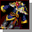
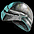
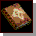
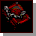
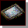

{kind=link}
（50分）
| ＜光奏師＞ | |
|---|---|
| 貴公子（Lv55） | |
| 素粒子加速実験装置（Lv120） | |
| 軍略のセオリー（Lv217） | |
| スウィテルベル・アカデミー（Lv330） | |
| 人間国宝（Lv415） | |
| プリズムブレーカー（Lv535） | |
| マイクロエレクトロニスト（Lv580） | |
| 漆黒の宴（Lv650） |
| セット名 | 部位 | 沸き場所/ボス名・沸き時間 | |||||
| 貴公子（Lv55） | 旧レッドアイ研究所B3 | ||||||
|  | 研究所長 （50分） |
||||||
| アイテム詳細 | セット効果 | |||||||||
| 部位 | 名前 | ステ要求 | OP1 | OP2 | OP3 | ベース | 2個 | 3個 | 4個 | 5個 |
| 鬼子母神 | 力 41 | 攻撃Lv5 ダメ＋40％ |
攻速Lv1 攻速＋20％ |
天上界の本 | 魔法抵抗 +10％ |
魔法抵抗 +15％ |
魔法抵抗 +20％ |
魔法抵抗 +25％ |
||
| キラキラサンバイザー | 力 10 | 最大CPLv9 CP＋100 |
皮の帽子 | 攻速 +5％ |
攻速 +10％ |
攻速 +15％ |
||||
| ネームダグ | カリスマ 20 | 威厳Lv6 カリスマ＋15 |
スカルネックレス | 体力吸収 5％ |
||||||
| 貴公子の威厳 | − | 防効Lv6 防御＋60％ |
インバネスコート | |||||||
| プチプチシューズ | 力 25 | 敏捷Lv5 敏捷＋10 |
知恵Lv5 知恵＋10 |
レザーシューズ | ||||||
| セット名 | 部位 | 沸き場所/ボス名・沸き時間 | |||||
| 素粒子加速実験装置（Lv120） | 傭兵達の大きな墓B2 | ||||||
| ミイラ王 （60分） |
|||||||
| アイテム詳細 | セット効果 | |||||||||
| 部位 | 名前 | ステ要求 | OP1 | OP2 | OP3 | ベース | 2個 | 3個 | 4個 | 5個 |
| アクセラレーター設計図 | 力 17 敏捷 17 |
光攻撃Lv7 光ダメ18〜31 23秒 |
木簡 | 魔法抵抗 +10％ |
魔法抵抗 +15％ |
魔法抵抗 +20％ |
魔法抵抗 +25％ |
|||
| 防毒面 | カリスマ 30 | 防効Lv6 防御＋60％ |
花冠 | 最大CP +50 |
最大CP +70 |
最大CP +100 |
||||
| ラテックグローブ | − | 攻速Lv1 攻速＋20％ |
皮のグローブ | ダメージ +50％ |
ダメージ +80％ |
|||||
| アンチ・ストレンジレット | 力 20 | CP減少抑止Lv3 敏捷＋20 |
移速Lv2 移速＋10％ |
レザーシューズ | 体力吸収 7％ |
|||||
| 15TeV | − | 攻撃力Lv1 ダメ＋3％ |
力Lv2 力＋3 |
敏捷Lv2 敏捷＋3 |
バトルリング | |||||
| セット名 | 部位 | 沸き場所/ボス名・沸き時間 | |||||
| 軍略のセオリー（Lv217） |  | ソルティケーブB7 | |||||
| ダークビショップ （5時間38分） |
|||||||
| アイテム詳細 | セット効果 | |||||||||
| 部位 | 名前 | ステ要求 | OP1 | OP2 | OP3 | ベース | 2個 | 3個 | 4個 | 5個 |
| 戦争哲学 | 力 146 敏捷 57 |
攻撃Lv9 ダメ＋120％ |
ハードカバー | 魔法抵抗 +10％ |
魔法抵抗 +15％ |
魔法抵抗 +20％ |
魔法抵抗 +25％ |
|||
| 皇帝の琥珀のペンダント | 力 75 | 達人 スキル＋1 |
攻撃回避Lv2 回避＋3％ |
スパイクカラー | スキル +1 |
スキル +2 |
スキル +3 |
|||
| デザートフォックス | 力 45 | 防効Lv6 防御＋60％ |
ノックアウト ﾉｯｸｱｳﾄ＋15％ |
兜 | 力 ＋150 |
力 ＋250 |
||||
| 英雄アガメムノーン | 力 120 | 健康Lv10 健康＋100 |
防効Lv8 防御＋100％ |
チェーンメイル | 攻速 +20％ |
|||||
| スノーモンスター | 力 80 | CP減少防止Lv3 減少限界CP＋20 |
攻撃回避Lv3 回避＋5％ |
移速Lv2 移速＋10％ |
メタルシューズ | |||||
| セット名 | 部位 | 沸き場所/ボス名・沸き時間 | |||||
| スウィティベル・アカデミー（Lv330） |  | スウェブタワー15F | |||||
| 地獄の使徒 （7時間38分） |
|||||||
| アイテム詳細 | セット効果 | |||||||||
| 部位 | 名前 | ステ要求 | OP1 | OP2 | OP3 | ベース | 2個 | 3個 | 4個 | 5個 |
| 院生名簿 | 知識 140 | 攻速Lv3 攻速＋50％ |
知識Lv10 知識＋100 |
古本DX | 魔法抵抗 +10％ |
魔法抵抗 +15％ |
魔法抵抗 +20％ |
魔法抵抗 +25％ |
||
| 出席記録カード | カリスマ 200 | 名手 スキル＋2 |
スカルネックレスGDX | スキル +2 |
スキル +3 |
スキル +4 |
||||
| 遠赤外線あったかグローブ | 力 60 | 攻速Lv1 攻速＋20％ |
CP効率Lv4 CP＋40％ |
皮のグローブDX | 攻速 +20％ |
攻速 +30％ |
||||
| アイボリーアカデミックガウン | 健康 75 カリスマ 75 |
防効Lv10 防御＋150％ |
知識Lv10 知識＋100 |
インバネスコートDX | 知識 ＋250 |
|||||
| オーロラクリエイター | 健康 140 | CP効率Lv1 CP＋8％ |
威厳Lv3 威厳＋4 |
知識Lv3 知識＋4 |
スカルリングLX | |||||
| セット名 | 部位 | 沸き場所/ボス名・沸き時間 | |||||
| 人間国宝（Lv415） | 暴かれた納骨堂B4 | ||||||
| 地下界の使者 （9時間38分） |
|||||||
| アイテム詳細 | セット効果 | |||||||||
| 部位 | 名前 | ステ要求 | OP1 | OP2 | OP3 | ベース | 2個 | 3個 | 4個 | 5個 |
| 週刊 高級ビット細工 | 力 110 | 攻撃Lv10 ダメ＋150％ |
致命打率Lv2 致命打＋10％ |
薄い本DX | 魔法抵抗 +10％ |
魔法抵抗 +15％ |
魔法抵抗 +20％ |
魔法抵抗 +25％ |
||
| 巨匠の習作 | 力 400 | 達人 スキル＋1 |
最高攻撃Lv3 最大ダメ＋6 |
最低攻撃Lv3 最小ダメ＋4 |
スパイクカラーXLS | ダメージ +50％ |
ダメージ +100％ |
ダメージ +150％ |
||
| ゴッドハンド | 力 50 | 攻速Lv1 攻速＋20％ |
力Lv7 力＋20 |
格闘用グローブ | 致命打 +5％ |
致命打 +5％ |
||||
| 一路邁進の軌跡 | 力 220 | 移速Lv4 移速＋20％ |
敏捷Lv7 敏捷＋20 |
チェーンシューズGDX | 命中 +7％ |
命中 +10％ |
||||
| オーソライズリング | 知恵 333 | 攻撃力Lv1 ダメ＋4％ |
力Lv3 力＋4 |
敏捷Lv3 敏捷＋4 |
レザーリングDX | 攻速 +25％ |
||||
| セット名 | 部位 | 沸き場所/ボス名・沸き時間 | |||||
| プリズムブレーカー（Lv535） |  | 呪いを受けたミズナの洞窟B2 | |||||
| 戦慄のサソリ （10時間38分） |
|||||||
| アイテム詳細 | セット効果 | |||||||||
| 部位 | 名前 | ステ要求 | OP1 | OP2 | OP3 | ベース | 2個 | 3個 | 4個 | 5個 |
| プリズム | 知識 452 | 名手 スキル＋2 |
CP効率Lv4 CP＋40％ |
封印されし本DX | 魔法抵抗 +10％ |
魔法抵抗 +15％ |
魔法抵抗 +20％ |
魔法抵抗 +25％ |
||
| 保護ゴーグル | カリスマ 185 | 威厳Lv7 カリスマ＋20 |
CPボーナスLv3 CP獲得ボーナス6％ |
ティアラGDX | カリスマ +50 |
カリスマ +100 |
カリスマ +150 |
|||
| ロジングローブ | 力 100 | 攻撃回避Lv2 回避＋3％ |
攻速Lv2 攻速＋35％ |
戦闘用グローブDX | 攻速 +15％ |
攻速 +20％ |
||||
| プリズムベスト | 健康 75 カリスマ 75 |
健康Lv10 健康＋100 |
状態異常抵抗 状態異常抵抗＋35％ |
眠り 睡眠攻撃＋15％ |
インバネスコートDX | ダメージ +80％ |
ダメージ +120％ |
|||
| エクスプローシブ | カリスマ 80 | CP効率Lv1 CP＋10％ |
威厳Lv3 威厳＋5 |
知識Lv3 知識＋5 |
スタンプリングLX | スキル +6 |
||||
| セット名 | 部位 | 沸き場所/ボス名・沸き時間 | |||||
| マイクロエレクトロニスト（Lv580） |  | ゴールド・スワンプ洞窟B3 | |||||
| 海の君主 （11時間45分） |
|||||||
| アイテム詳細 | セット効果 | |||||||||
| 部位 | 名前 | ステ要求 | OP1 | OP2 | OP3 | ベース | 2個 | 3個 | 4個 | 5個 |
| 光測定盤 | 力 389 敏捷 230 |
攻撃Lv9 ダメ＋120％ |
攻撃Lv8 ダメ＋100％ |
石碑DX | 魔法抵抗 +10％ |
魔法抵抗 +15％ |
魔法抵抗 +20％ |
魔法抵抗 +25％ |
||
| レクテナ | カリスマ 275 | 知恵Lv9 知恵＋50 |
威厳Lv10 カリスマ＋100 |
王冠XLS | 回避 +3％ |
回避 +6％ |
回避 +10％ |
|||
| スペクトラムチューナー | 力 130 | 致命打率Lv2 致命打＋10％ |
攻速Lv2 攻速＋35％ |
鱗グローブDX | スキル +5 |
スキル +6 |
スキル +7 |
|||
| 光学迷彩 | 力 512 | 防効Lv10 防御＋150％ |
攻撃回避Lv4 回避＋7％ |
フルプレートアーマーXLS | 火ダメ 100〜150 |
火ダメ 150〜200 |
||||
| 石ころブーツ | 力 293 | 移速Lv5 移速＋30％ |
HP効率Lv3 HP＋25％ |
メタルシューズGDX | CPボーナス 8％ |
|||||
| セット名 | 部位 | 沸き場所/ボス名・沸き時間 | |||||
| 漆黒の宴（Lv650） | モリネルタワー 地上６階 | ||||||
| モリネル守護神 （12時間50分） |
|||||||
| アイテム詳細 | セット効果 | |||||||||
| 部位 | 名前 | ステ要求 | OP1 | OP2 | OP3 | ベース | 2個 | 3個 | 4個 | 5個 |
| 禁書’漆黒’ | 力 131 敏捷 101 |
攻撃Lv10 ダメ＋150％ |
力Lv10 力＋100 |
知識Lv10 知識＋100 |
木簡DX | 魔法抵抗 +10％ |
魔法抵抗 +15％ |
魔法抵抗 +20％ |
魔法抵抗 +25％ |
|
| 禍の魔術帽 | カリスマ 275 | 全異常抵抗 全異常抵抗＋15％ |
防効Lv5 防御＋40％ |
CP効率Lv4 CP＋40％ |
王冠XLS | 知識 +200 |
知識 +350 |
知識 +500 |
||
| 漆黒の悪魔 | 力 240 | 攻撃Lv3 ダメ＋15％ |
知識Lv9 知識＋50 |
攻速Lv1 攻速＋20％ |
武道グローブGDX | ダメージ +120％ |
ダメージ +180％ |
ダメージ +220％ |
||
| 死のローブ | 力 512 | 健康Lv10 健康＋100 |
防効Lv10 防御＋150％ |
フルプレートアーマーXLS | 攻速 +15％ |
攻速 +30％ |
||||
| ウロボロスの輪 | 知恵 424 | 力Lv3 力＋5 |
敏捷Lv3 敏捷＋5 |
攻撃力Lv1 ダメ＋5％ |
バトルリングDX | スキル +8 |
||||

{kind=link}
{kind=link}
{kind=link}
{kind=link}
{kind=link}
{kind=link}
{kind=link}